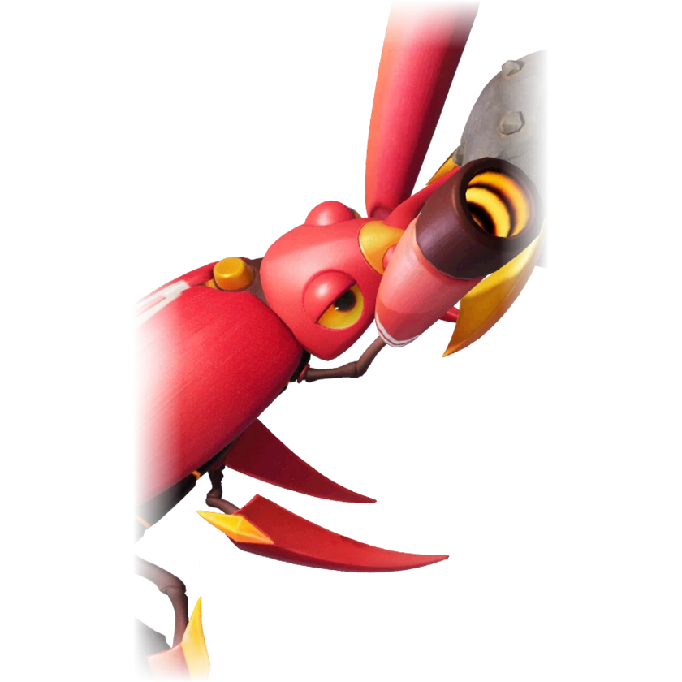

รายชื่อ Aniimo › #057

ด้วงหินซิ่ง (Waleetle)
#057ธาตุดินNovaDPSTier B
เดินถอยหลังเหมือนญาติ ๆ แต่ดูหรูหรากว่ามาก
ดูรายละเอียดเต็ม ร่างพิเศษ และร่างเปล่งประกายค่าสถานะพื้นฐาน
| HP | 90 |
|---|---|
| ATK | 114 |
| P.DEF | 80 |
| M.DEF | 80 |
| REGEN | 100 |
| BREAK | 52 |
สกิล
| โจมตีปกติ | ATK ดิน ใช้พลังดินโจมตีเป้าหมายระยะประชิด |
| สกิล 1 | Stone Ball Cutter ดิน ยกลูกหินขึ้นแล้วกลิ้งไปข้างหน้า ทำดาเมจจำนวนมาก |
| สกิล 2 | Stone Ball Drift ดิน หมุนตัวทำดาเมจเป้าหมายด้านหน้า แต่ละครั้งที่โดนเพิ่มดาเมจ 8% เป็นเวลา 20 วินาที ซ้อนได้สูงสุด 4 ครั้ง |
| สกิล 3 | Sandstorm Spin ดิน หมุนตัวโดยใช้ EP ต่อเนื่อง ทำดาเมจ ทำดาเมจเพิ่ม 20% ต่อเป้าหมายที่ถูก BREAK ความเร็วหมุนจะค่อย ๆ เพิ่ม ทำให้ความถี่ดาเมจเพิ่มได้ถึง 100% โดยไม่ใช้ EP เพิ่ม |
| อัลติเมต | Rock Ball Blast ดิน ปล่อยลูกหินยักษ์ไปข้างหน้า กลิ้งทับเป้าหมายตามทางแล้วระเบิด |
สายวิวัฒนาการ
- ด้วงกลิ้งหิน → ด้วงหินซิ่ง (Aniimo เลเวล 39, ทำ Great Rolling Racing Challenge ให้สำเร็จ)
จุดเกิด
- Berylline Vale Lv. 40–47
Held Item ที่แนะนำ
- Ferocious Fang Aniimo ที่สวมใส่ได้ ATK เพิ่ม 0.7 ต่อเลเวล
งานใน Homeland
งานธาตุดิน Lv.3, ขนของ Lv.3